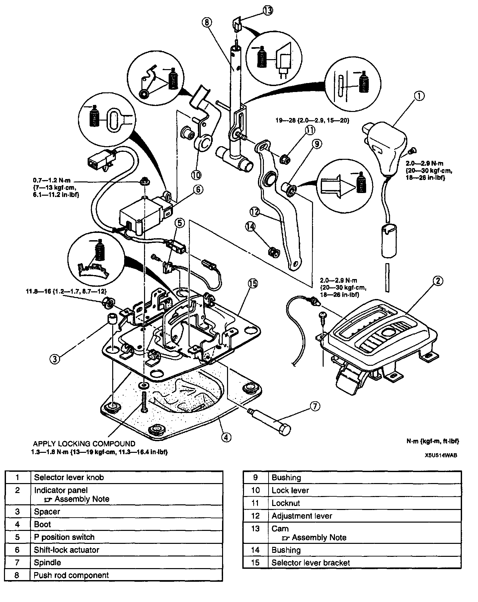
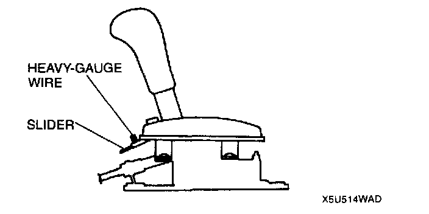
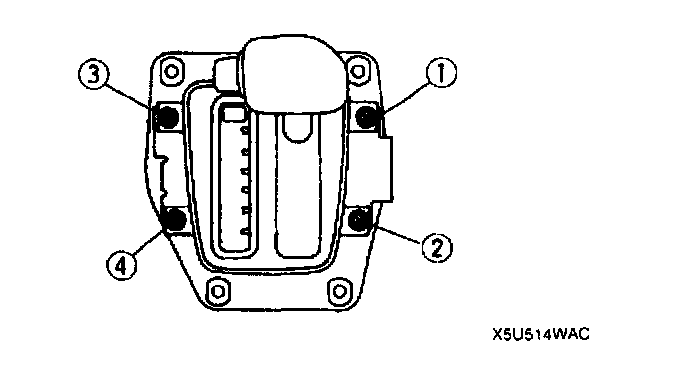

Selector Lever Disassembly/Assembly
SELECTOR LEVER DISASSEMBLY/ASSEMBLY
1. Disassemble in the order indicated in the table.
2. Assemble in the reverse order of disassembly.
Cam Assembly Note
1. Temporarily install the cam to the push rod.
Note: The clearance becomes smaller by turning the cam clockwise.

2. Adjust the clearance between the guide plate and the guide pin by turning the cam.
3. Install the selector lever knob and verify that the clearance is as specified.
4. If necessary, repeat from step 2.
Indicator Panel Assembly Note
1. Set the selector sleeve over the selector lever.
2. Grasp the O/D OFF switch wiring harness and pull it while pushing the selector lever knob down fully on the selector lever.
3. Connector the O/D OFF switch connector.
4. Shift the selector lever to P position.

5. Align the alignment hole in the slider with the hole in the indicator panel. Install suitable heavy-gauge wire to hold the slider.

6. Tighten the indicator mounting screws in the order shown in the figure.
Tightening torque 2.0 - 2.9 Nm (20 - 30 kgf-cm, 18 - 26 inch lbs.)
7. Remove the wire from the slider.
8. Verify that the selector lever properly aligns with the indicator in each range.
9. Verify correct operation of the emergency override button.